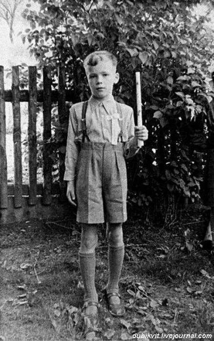
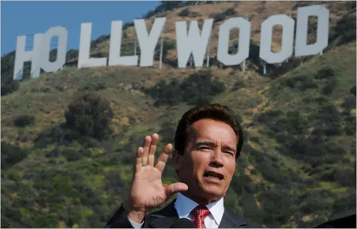
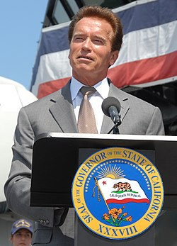

°Infância na Áustria: Nascido em 1947 em Thal, uma pequena cidade austríaca, Schwarzenegger teve uma infância marcada pela pobreza do pós-guerra e pela disciplina rígida de seu pai, um policial. A casa onde morava não tinha encanamento interno ou telefone. Desde cedo, ele sonhava em emigrar para os Estados Unidos e se tornar uma estrela.

°Carreira no Fisiculturismo: Arnold começou a praticar musculação aos 14 anos e rapidamente se destacou no esporte. Aos 20 anos, tornou-se o mais jovem campeão do Mr. Universo. Ele conquistou o título de Mr. Olympia sete vezes, consolidando-se como um dos maiores fisiculturistas de todos os tempos e sendo fundamental para popularizar o esporte em escala global.

°Sucesso em Hollywood: Usando o fisiculturismo como um "passaporte para a América", mudou-se para os EUA e, após uma transição inicial difícil devido ao sotaque e ao tipo físico, encontrou seu nicho no cinema de ação. Filmes como Conan, o Bárbaro (1982), O Exterminador do Futuro (1984) e O Predador (1987) o transformaram em um dos maiores heróis de ação do mundo.

<°Atuação como Governador da Califórnia: Em um movimento surpreendente, Schwarzenegger entrou para a política e foi eleito o 38º governador da Califórnia em 2003, servindo até 2011. Sua atuação política marcou mais um capítulo de sucesso em sua multifacetada carreira.